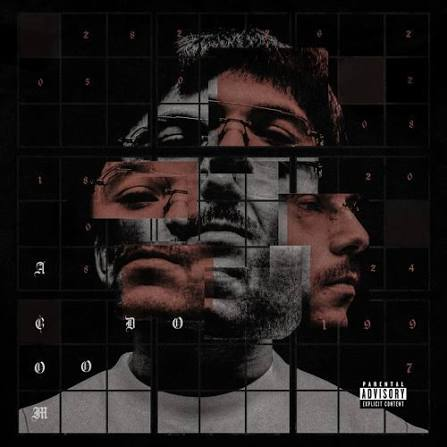
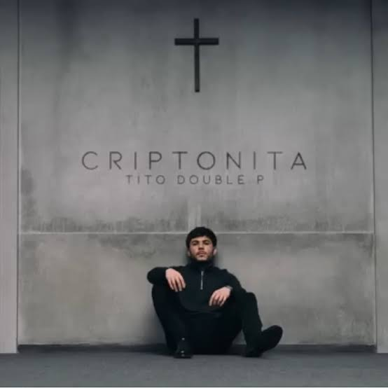
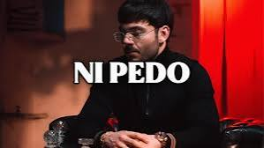
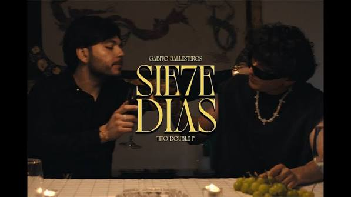

Tito Double P
| FOTO | CANCION | LETRA | VIDEO |
|---|---|---|---|
 |
Brillo |
Chiquitita Di dónde ha quedado el brillo No hace falta, mami, ni pelear Fuck you, maldito Cupido Aquí ya nada es igual Me acuerdo y nomás me río Te di todo y me pagaste mal Ando en busca del olvido Ya no te quiero extrañar Te volviste más que puras promesas Y yo no me daba cuenta, y ahorita no me interesa Qué hueva volverte a topar en la fiesta Bailando de mesa en mesa con tu cara de coqueta Ya no te extraña ni el perro ni yo Ya hay otros labios que besan mejor Ay, mamá De la noche quisiera que no fuera como tú Pa' que no se vaya Me la paso mejor con las putas, los panas Bien perdido, pero juro que estoy mejor Sentimientos extraños, quiero odiarte Pero al final siempre te extraño Fueron meses, mejor dicho, casi fue el año Y es que verte nomás me patea el corazón Te volviste más que puras promesas Y yo no me daba cuenta, y ahorita no me interesa Qué hueva volverte a topar en la fiesta Bailando de mesa en mesa con tu cara de coqueta Ya no te extraña ni el perro ni yo Ya hay otros labios que besan mejor Wuh |
video |
 |
Criptonita |
Otra traición, y a mí me pese Reconocer si me estremeces ¿Qué es que hago yo? Ni los tres meses Nada especial, mi criptonita Y, aunque hubo más, mi favorita Tú llorarás, me necesitas ¿Dónde es que estás? Tú tan bonita Solo vaciando unos botes y viendo a la luna Solo que esta noche sí tiene algo de especial Por enfocarme en tus ojos, perdí la cordura Y hoy en la puta loquera me quiero quedar ¡Ay, mamá! Tito Double P Bélico, pero no tanto, mija !Wuh! Compadre Ah Al corazón puras mentiras Tuve razón, nomás te miras Pa'l desamor unas amigas Pa mí un gallón, pa ellas tequila Nada de amor ni de familia Otro loquerón, polvos me animan Soy un cabrón, y me lastimas Fan del dolor, pero asesinas Solo vaciando unos botes y viendo a la luna Solo que esta noche sí tiene algo de especial Por enfocarme en tus ojos, perdí la cordura Y hoy en la puta loquera me quiero quedar, ay |
video |
 |
Ni pedo |
Por pensar que ese día yo estaría a tu lado Todos locos, desnudos, bien abrazados Y hoy no quiere ni verme, me traes enculado Ay, qué pedo, me empedo y me entra la rabia Sin tu amor, desvarío, me falta la calma Es inútil pensar que estés en mi cama Y el saber que fallé es lo que me chinga el alma Otra rotura más al corazón Otra vez que me voy sin nada Otra vez que entrego todo mi amor Y otra vez que me dan la espalda Pero no supe qué sucedió De repente todo se acaba Cupido otra vez me traicionó No hay pedo, al rato se me pasa Al rato se me pasa Jajajay Mamá Tú te vas cuando yo voy llegando Bueno, dime, mija, qué estamos jugando Hasta el pinche perro se mira agüitado Y la neta, hasta loco te sigo pensando Otra rotura más al corazón Otra vez que me voy sin nada Otra vez que entrego todo mi amor Y otra vez que me dan la espalda Pero no supe qué sucedió De repente todo se acaba Cupido otra vez me traicionó No hay pedo, al rato se me pasa, mi viejo Yayay Chiquitita Chau A ver, saca esa botella pa' acá, Tito Pégate un shot |
video |
 |
7 Dias |
Van siete días y me pesa que ya no estás Que tú no volverás y a la verga al final Solo somos yo y la puta ansiedad La puta ansiedad Treinta llamadas perdidas y un "¿Dónde estás?" ¿Como voy a explicar que me perdí en loqueras? Las putas, los panas por matar esta ansiedad Puta ansiedad Dime qué tienes Si tú al final no sabes ni qué quieres Para olvidarte me comí otras pieles Ya no me pesa gastar los billetes Pendiente Dime qué tienes Si nos juramos un amor pa' siempre Ya no te hagas la que no me quiere Que en esos ojos se ve que aún me quieres Me entiende, me entiende Pero, sí entiendes, ¿o no? Tito Double P, ay Yo', así suena su compa, Gabito, viejo Ahí te va, chiquitita Eso compa, Tito, uh Van siete días y ahora acepto que ya no estás Que te voy a olvidar Y el alcohol sabe mal, ya juré por mi bien Que no te vuelvo a mirar No te vuelvo a mirar Dime qué tienes Si tú al final no sabes ni qué quieres Para olvidarte me comí otras pieles Ya no me pesa gastar los billetes Pendiente Ni tú te entiendes ¿Dónde quedó ese amor que era pa' siempre? Ya no te hagas la que no me quieres Que en esos ojos se ve que sí quieres Entiende Plan, plan |
video |
 |
Me vale V |
Me llegan los billetitos de a cienes Pa' andar bien perrón, loco en breve Compadre, saque la loquerona y la verde Ya va pa' largo, se guachamanece Que está bien ondeadote este plebe Que la escuela, que los deberes Linda manera de gastar en mujeres Fluyendo, pienso, manifiesto y se viene Ahí pa' que guachen qué pedo, qué tranza Que el morro creció y machín pegó Un culito me anda meneando y periquiando Se puso bien el coto Derecho ando calando, no soy malandro Nomás la finta y lo placosón Ya van tres días que no paro, pero bien trabado Me vale verga y ni modo Compa Ando zumbando apenas agarre viada Rifando macizo, generando lana Por ahí decían que yo no la amaba Que de mañoso tenía fama Putas envidias, no sé cómo les cala Igual, me vale verga, pues no ando en la maña Ahí pa' que guachen qué pedo, qué tranza Que el morro creció y machín pegó Un culito me anda meneando y periquiando Se puso bien el coto Derecho ando calando, no soy malandro Nomás la finta y lo placosón Ya van tres días que no paro, pero bien trabado Me vale verga y ni modo |
video |